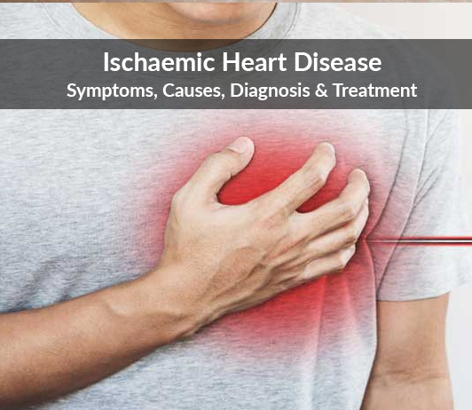

နှလုံးသွေးကြောကျဉ်းရောဂါ- Ischaemic Heart Disease

နှလုံးသွေးကြောကျဉ်းရောဂါဆိုတာ
နှလုံးသွေးကြောကျဉ်းရောဂါဆိုတာ နှလုံးဆီကို သွေးပို့လွှတ်တဲ့ သွေးကြောတွေ တဖြည်းဖြည်း ကျဉ်းလာတဲ့အတွက် နှလုံးထံကို သွေး အလုံအလောက် မရောက်တော့ဘဲ နောက်ဆက်တွဲ ပြသနာတွေ ဖြစ်ပေါ်လာတာကို ခေါ်ပါတယ်။
ဘာကြောင့် ဖြစ်ရတာလဲ
အသက်ကြီးလာတာနဲ့အမျှ သွေးကြောနံရံတွေ မာကြောလာတာ၊ သွေးကြောနံရံမှာ အဆီတွေ စုပုံတာတွေ ဖြစ်လာပါတယ်။
ဒီတော့ နှလုံးသွေးကြောတွေက ကျဉ်းလာပြီး နှလုံးဆီကို သွေးအလုံ အလောက် မရောက်နိုင်တာကြောင့် နှလုံးရဲ့ လုပ်ငန်းဆောင်တာတွေကို ပုံမှန်မလုပ်ဆောင်နိုင်တော့ဘဲ ရောဂါလက္ခဏာတွေ ဖြစ်ပေါ်လာပါတယ်။
သိသာထင်ရှားတဲ့ လက္ခဏာများ
-ရင်ဘတ်အောင့်တာဟာ အများဆုံးတွေ့ရတဲ့ ရောဂါလက္ခဏာဖြစ်ပါတယ်။ ရင်ညွန့်အနီးတဝှိုက် အောင့်တတ်ပြီး ရင်ဘတ်ကိုဆွဲဆုတ်ထားသလို ခံစားရနိုင်ပါသည်။
-ခန္ဓာကိုယ် လှုပ်ရှားမှုများတဲ့အခါ ပိုအောင့်တတ်ပါတယ်။ အနားယူလိုက်တဲ့အခါမျိုးမှာတော့ ပြန်ပြီးသက်သာသွားတာမျိုး ဖြစ်တတ်ပါတယ်။
-အစာမကြေတာ၊ ရင်ပူတာ စတဲ့ လက္ခဏာတွေနဲ့ လည်းမှားနိုင်ပါတယ်။
-ဘယ်ဘက်ပုခုံး၊ လည်ပင်း၊ မေးရိုး စတဲ့နေရာတွေမှာလည်း နာကျင်တာမျိုး ဖြစ်တတ်ပါတယ်။ ပျို့ခြင်းအန်တာ၊ ချွေးစေးပြန်တာ၊ ပင်ပန်းနွမ်းနယ်တာတွေ ခံစားရနိုင်ပါတယ်။
-နောက်ပြီး မောပန်းတာ၊ ရင်တုန်တာ၊ နှလုံးခုန်မြန်တာ တွေ လည်းဖြစ်ပွားနိုင်ပါတယ်။ ရောဂါအခြေအနေဆိုးရွားလာမယ်ဆိုရင် နှလုံးကြွက်သားပုပ်တာ၊ ရုတ်တရက်ရှော့ခ်ရပြီး သတိလစ်သွားတာမျိုး ဖြစ်တတ်ပါတယ်။
ကုသမှု ပေးတဲ့အခါ
အရင်ဆုံး ရောဂါရာဇဝင်ကို အသေးစိတ်မေးမြန်းရပါမယ်။
- ဘယ်နေရာက အောင့်နေတာလဲ၊
- ဘယ်အချိန်မှာ ပိုပြီး အောင့်တတ်လဲ၊
- ဘယ်လိုနေရင် နှလုံးက ပိုအောင့်တာလဲ စတာတွေကို သေသေချာချာ မေးရပါမယ်။
နောက်တစ်ဆင့်အနေနဲ့ ထပ်ပြီး ပြုလုပ်သင့်တဲ့ စမ်းသပ်စစ်ဆေးမ တွေကတော့
- နှလုံးခုန်သံ နားထောင်တာပြီး နှလုံးခုန်သံ မှန်၊ မမှန်၊
- နှလုံးခုန်နှုန်းကို ရေတွက်တာပြီး နှလုံး ခုန်နှုန်း မြန်၊ မမြန်၊
- သွေးဖိအားကို ပုံမှန်တိုင်းတာပြီး သွေးဖိအား တက်နေလား၊ ကျနေလား ဆိုတာ အဓိက စစ်ဆေးရပါမယ်။
တခြားရောဂါလက္ခဏာတွေ
- ဖြူဖျေားနွမ်းနယ်တာ၊
- မျက်လုံးတစ်ဝိုက် ဒါမှမဟုတ် တစ်ကိုယ်လုံးဖောရောင်လာတာ၊
- မောပန်းနေတာ၊
- ညဘက်မောပြီး ထထိုင်နေရတာ၊
- ခဏခဏ ရင်တုန်တာ၊
- မူးမေ့လဲတာတွေ ခံစားရနိုင်ပါတယ်။
စစ်ဆေး ကုသတဲ့အခါ
- စစ်ဆေးမှုတွေ အနေနဲ့ ဓာတ်မှန်ရိုက်တာ၊
- Echo (နှလုံးဓာတ်မှန်) ရိုက်တာ၊
- ECG ဆွဲတာ၊
- စီတီ၊ MRI ရိုက်တာ၊
- သွေးတွင်း အင်ဇိုင်းဓာတ်တစ်မျိုးကို စစ်တာ၊
- သွေးတွင်းအဆီဓာတ်စစ်ဆေးတာ တွေကို ဆရာဝန်ကြီးတဲ့ ညွှန်ကြားချက်အတိုင်း ပြုလုပ်နိုင်ပါတယ်။
ကုသခြင်းအပိုင်းမှာလည်း ခွဲစိတ်ကုသတာ၊ သောက်ဆေးပေးပြီး ကုသတာမျိုး ပြုလုပ်လေ့ရှိပါတယ်။
-
-
-
-
ရောဂါမဖြစ်အောင် ကာကွယ်နိုင်ဖို့
နှလုံးသွေးကြောကျဉ်းရောဂါ မဖြစ်အောင် ကာကွယ်တဲ့နေရာမှာ နေ့စဉ် နေထိုင်မှုဘဝပုံစံက အရမ်းကို အရေးပါ ပါတယ်။
-ဆေးလိပ်သောက်တာဟာ နှလုံး သွေးကြောကျဉ်းရောဂါ ဖြစ်စေနိုင်တဲ့ အဓိကအကြောင်းအရင်းတစ်ခုဖြစ်တဲ့အတွက် ဆေးလိပ်ဖြတ်နိုင်အောင် မဖြစ်မနေ ကြိုးစားရပါမယ်။
-အစားအသောက်အနေနဲ့ကတော့ အဆီများတဲ့ အစားအစာတွေ၊ အငန်ပိုတဲ့ အစားအစာတွေ၊ အချိုကဲတဲ့အစားအစာကို အတတ်နိုင် ဆုံးလျှော့စားရပါမယ်။
အနေအထိုင်အနေနဲ့ ကိုယ်လက်လှုပ်ရှားမှုကို နေ့စဉ်ပုံမှန်ပြုလုပ်ဖို့ လိုပါတယ်။ နေ့စဉ်လမ်းလျှောက်တာ၊ အေရိုးဗစ်လို နှလုံး ကျန်းမာစေတဲ့ လေ့ကျင့်ခန်းတွေ ပြုလုပ်တာ၊ မိမိစိတ်ဝင်စားတဲ့ အားကစားတစ်မျိုးမျိုးကို ပုံမှန်ပြုလုပ်တာမျိုး ရှိသင့်ပါတယ်။ တစ်နေ့ကို ၁၅မိနစ်ကနေ နာရီဝက် အထိ ပုံမှန်ကိုယ်လက်လှုပ်ရှားမှုပြုလုပ်ရပါမယ်။ ကိုယ်အလေးချိန်ထိန်းပြီး အဝမလွန်အောင် ဂရုပြုပါ။
နောက်ပြီး သွေးဖိအားနဲ့ သွေးတွင်းသကြားဓာတ် တို့ကို သေသေချာချာ ထိန်းထားသင့်ပါတယ်။ ပုံမှန် သွေးချို ဖောက်စစ်တာ၊ သွေးပေါင်ပုံမှန်တိုင်းတာ တို့ကိုပြုလုပ်ပြီး သောက်ဆေး၊ ထိုးဆေးတို့ကို ပုံမှန်သောက်တာ၊ ထိုးတာတွေ ပြုလုပ်သင့်ပါတယ်။
သုံးသပ်ချက်
အကျဉ်းချုပ်အနေနဲ့ မိမိရဲ့ အစားအသောက် အနေအထိုင် ပုံစံကိုထိန်းသိမ်းပြီး ကိုယ်လက် လှုပ်ရှားမှု ပုံမှန်ပြုလုပ်မယ်ဆိုရင် နှလုံးသွေးကြောကျဉ်းရောဂါကို ကြိုတင် ကာကွယ်နိုင်တာကြောင့် ဆင်ခြင်သတိပြုဖို့ ဆန္ဒပြုလို်က်ရပါတယ်။
Source- ဒေါက်တာ အောင်ပြည့်ဖြိုးဦး